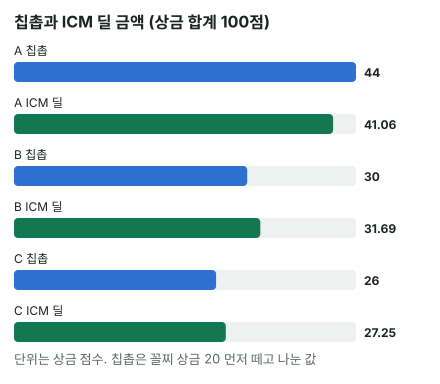

안녕하세요. E10에서 스택과 상금표로 ICM 기대 상금을 구했죠. 오늘은 그 값을 딜에 써요.
딜은 남은 사람들이 게임을 멈추고 남은 상금을 합의해서 나누는 거예요. 상금 일부만 나누고 나머지를 걸고 계속 치는 딜도 있고요. 딜이 되는지와 방식은 대회 규정마다 달라서, 규정을 먼저 확인해야 해요. 오늘은 딜을 할지 말지는 권하지 않고, 금액만 계산해요.
이 글에서 배울 것
- 같은 스택으로 ICM 딜과 칩촙 금액을 각각 구하는 법
- 상금을 바닥·2등 보너스·1등 보너스 세 층으로 나눠 보면, 두 방식의 차이가 어느 층에서 생기는지 보여요
- 칩촙이 칩 리더에게 유리해지는 이유: "2등 안에 들 확률"은 칩만큼 늘지 않아서
오늘의 조건 (고정)
3명 남음, 상금 1등 50 · 2등 30 · 3등 20(단위 점, 합계 100점). 전체 칩 100BB.
- A 60BB · B 25BB · C 15BB
결론부터 말하면, 이 조건에서 칩촙(최저 상금을 먼저 주고 나머지를 칩 비율로 나누는 딜)은 칩 리더 A에게 ICM 딜보다 약 2.94점 많고, B와 C는 ICM 딜이 더 커요.
1단계. 두 가지 나누는 법
용어
- ICM 딜: 각자 E10 방식의 ICM 기대 상금만큼 받기
- 칩촙: 최저 상금(3등 상금 20점)을 모두에게 먼저 주고, 나머지를 칩 비율로 나누기
최저 상금을 먼저 주는 이유
100점을 칩 비율로만 나누면 C는 100 × 0.15 = 15점이에요. 지금 바로 떨어져도 받는 3등 상금 20점보다 적어서, C에게 맞지 않는 금액이죠.
그래서 이 글에서는 칩촙을 위 정의대로 계산해요. 실전에서는 칩 비율 그대로 나누는 것도 칩촙이라고 불러서, 두 방식 모두 쓸 수 있어요. 딜 이야기가 나오면 어느 방식인지부터 정하고 계산하세요.
칩촙 나머지 = 100(상금 합계) − 20(3등 상금) × 3(인원) = 40점
2단계. 세 사람 금액
| 칩 비율 | 칩촙 | ICM 딜 | 칩촙 − ICM | |
|---|---|---|---|---|
| A | 60% | 44 | 약 41.06 | 약 +2.94 |
| B | 25% | 30 | 약 31.69 | 약 −1.69 |
| C | 15% | 26 | 27.25 | 약 −1.25 |
상금 합계가 100점이라 ICM 기대 상금이 곧 상금 비율(A 약 41.06%)이에요. 칩촙은 이렇게 구해요.
- A 칩촙 = 20 + 40 × 0.6 = 44
- B 칩촙 = 20 + 40 × 0.25 = 30
- C 칩촙 = 20 + 40 × 0.15 = 26

여기까지는 "숫자가 다르다"예요. 이제 왜 다른지를 층으로 나눠 봐요.
3단계. ICM 기대 상금을 등수 확률로 다시 보기
등수를 차례로 뽑는 방식
E10의 ICM은 칩 비율만큼 1등을 뽑고, 남은 사람 중에서 다시 칩 비율만큼 2등을 뽑는 방식이에요. A가 1등일 확률은 칩 비율 그대로 0.6이에요.
A가 2등이 되는 길은 둘이에요. B가 1등이면 남은 칩 75 중 A의 몫 60 ÷ 75 = 0.8, C가 1등이면 남은 칩 85 중 60 ÷ 85 = 약 0.706이에요.
A 2등 확률 = 0.25 × 0.8 + 0.15 × 0.70588 = 0.2 + 0.10588 = 약 0.306
세 사람의 등수 확률
| 1등 | 2등 | 3등 | |
|---|---|---|---|
| A | 60% | 약 30.59% | 약 9.41% |
| B | 25% | 약 41.91% | 약 33.09% |
| C | 15% | 27.5% | 57.5% |
A ICM = 0.6 × 50 + 0.30588 × 30 + 0.09412 × 20 = 30 + 9.1764 + 1.8824 = 약 41.06
4단계. 상금을 세 층으로 쪼개기
층 나누기
상금표 50 · 30 · 20을 층으로 쌓아 볼게요.
| 층 | 누가 받나 | 한 사람당 |
|---|---|---|
| 바닥 | 세 명 모두 | 20점 |
| 2등 보너스 | 2등 안에 든 두 명(1등도 받아요) | 10점 |
| 1등 보너스 | 1등 한 명 | 20점 |
1등은 20 + 10 + 20 = 50, 2등은 20 + 10 = 30, 3등은 20이죠. 합계도 20 × 3 + 10 × 2 + 20 = 100이에요.
층마다 두 방식을 비교하면
바닥은 두 방식 모두 20점씩 똑같이 줘요.
칩촙의 나머지 40점은 이 두 층을 합친 거예요. 1등 보너스 20점 + 2등 보너스 20점(10점 × 두 자리) = 40점이죠.
1등 보너스 20점은 두 방식이 똑같아요. ICM에서 1등 확률은 칩 비율 그대로라, A의 1등 보너스 기대값은 20 × 0.6 = 12점이에요. 칩촙도 나머지 40점 가운데 이 20점을 칩 비율로 나누는 셈이니 똑같이 12점이에요.
차이는 전부 2등 보너스 20점(10점 × 두 자리)에서 나요. 칩촙은 이것도 칩 비율로 나눠 A에게 20 × 0.6 = 12점을 줘요. ICM은 "2등 안에 들 확률"만큼 줘요.
A가 2등 안에 들 확률 = 0.6 + 0.30588 = 0.90588 A의 2등 보너스(ICM) = 10 × 0.90588 = 약 9.06
12 − 9.06 = 약 2.94. 2단계 표의 차이 +2.94가 바로 여기서 나왔어요.
한 사람이 받을 수 있는 2등 보너스는 아무리 잘해도 10점인데, 칩촙은 A에게 이 층에서 12점을 줘요. 한 사람의 최대치보다 더 주는 거예요. 정리하면 이 층의 차이는 늘 이 식이에요.
칩촙 − ICM = 10 × (2 × 칩 비율 − 2등 안에 들 확률)
A라면 10 × (2 × 0.6 − 0.90588) = 약 2.94예요.
이게 무슨 뜻이냐면
A는 칩이 60%라 칩촙에서는 2등 보너스 20점의 60%를 가져가요. 그런데 2등 안에 들 확률은 아무리 칩이 많아도 1을 넘을 수 없고, 한 사람이 받는 2등 보너스는 최대 10점이에요. 칩은 B의 두 배가 넘는데, 2등 안에 들 확률은 0.90588 대 0.66912로 1.5배도 안 돼요.
이게 E10의 천장이에요. 칩이 많을수록 "2등 안에 든다"는 이미 거의 확보돼서, 칩을 더 가져도 그 몫이 늘지 않아요. 칩촙은 이 천장을 무시하고 칩대로 나누니 칩 리더에게 더 주게 돼요.
B와 C도 같은 계산
B가 2등 안에 들 확률 = 0.25 + 0.41912 = 0.66912 B의 2등 보너스(ICM) = 10 × 0.66912 = 약 6.69 B의 2등 보너스(칩촙) = 20 × 0.25 = 5 C가 2등 안에 들 확률 = 0.15 + 0.275 = 0.425 C의 2등 보너스(ICM) = 10 × 0.425 = 4.25 C의 2등 보너스(칩촙) = 20 × 0.15 = 3
| 2등 안에 들 확률 | 2등 보너스(ICM) | 2등 보너스(칩촙) | 차이 | |
|---|---|---|---|---|
| A | 0.90588 | 약 9.06 | 12 | 칩촙이 약 2.94 많음 |
| B | 0.66912 | 약 6.69 | 5 | ICM이 약 1.69 많음 |
| C | 0.425 | 4.25 | 3 | ICM이 1.25 많음 |
B가 C보다 ICM에서 더 얻는 이유도 보여요. B는 칩이 C의 두 배도 안 되는데, 2등 안에 들 확률은 0.66912 − 0.425 = 약 0.24만큼 높아요. 이 조건에서는 B가 2등 보너스 층에서 칩촙으로 가장 많이 덜 받는 쪽이에요.
왜 그럴까: 칩촙은 "등수"를 보지 않고 "칩"만 보니까
칩촙은 최저 상금만 빼면 나머지를 한 덩어리로 보고 칩대로 나눠요. 그런데 실제 상금은 1등 보너스와 2등 보너스라는 모양이 다른 두 층이에요.
1등 보너스는 한 명만 받으니 칩 비율 그대로 나누는 게 ICM과 같아요. 2등 보너스는 두 명이 받으니 "두 자리 중 하나에 들 확률"로 나눠야 하는데, 이 확률은 칩에 비례하지 않아요. 상금표에서 2등과 3등의 차이가 클수록 이 층이 두꺼워져 두 방식의 차이도 커져요.
자주 하는 실수
실수 1. "칩촙은 칩대로 나누니 가장 공정하다" 칩대로 나누는 게 공정해 보여도, 상금이 칩대로 주어지지 않아요. 오늘 A는 칩 60%로 2등 안에 들 확률이 0.90588일 뿐인데, 칩촙은 2등 보너스를 칩 60%로 줘서 약 2.94점을 더 줘요. 어떤 기준의 공정함인지부터 정해요.
실수 2. 칩촙 방식을 안 정하고 계산하기 같은 "칩촙"이라도 칩 비율 그대로면 C는 15점, 최저 상금을 먼저 주면 26점이에요. 차이가 11점이나 나요. 딜 이야기 전에 어느 방식인지를 꼭 맞춰요.
실수 3. "칩 리더만 칩촙이 유리하고, 나머지는 늘 ICM 딜이 크다" 오늘은 B·C 모두 ICM 딜이 컸지만, 중간 스택은 스택에 따라 뒤집혀요. 문제 1처럼 45BB·45BB·10BB면 45BB 두 사람은 칩촙에서 조금 더 받아요. 누가 이득인지는 외우지 말고 2등 보너스 층의 식으로 계산해요.
"ICM 딜이 항상 공정한 건가요?"
ICM은 실력 차이, 블라인드 크기, 자리를 넣지 않고 칩 비율만으로 등수 확률을 구해요. 블라인드가 아주 크면 숏스택이 곧 강제로 올인해야 하는 사정도 빠져 있죠.
그래서 오늘 금액은 "이 조건에서 두 방식이 얼마나 다른지"를 보여 줄 뿐, 어느 쪽이 맞다고 정해 주지는 않아요. 딜은 결국 사람끼리 합의하는 거예요.
숫자가 뒤집히는 지점
- 기준은 칩촙 금액(20 + 40 × 칩 비율)이 ICM 기대 상금보다 큰지예요. 크면 그 사람에게 칩촙이, 작으면 ICM 딜이 커요
- 층으로 보면 같은 기준이 "칩 비율로 받는 2등 보너스 > 2등 안에 들 확률 × 10"인지로 바뀌어요
- 상금표의 2등·3등 차이가 작아지면 그 층이 얇아져 두 방식의 차이도 작아져요
선생님의 한마디
딜 이야기가 나오면 이 순서로 확인해요.
- 규정상 딜이 되는지, 칩촙이 어느 방식인지
- 내 2등 안에 들 확률을 1등 확률 + 2등 확률로
- 10 × (2 × 칩 비율 − 그 확률)로 내 쪽 차이 부호 보기
연습 문제 (같은 상금표, 스택만 바꿈)
뚝섬 학습툴에는 스택·상금을 넣고 각자 기대 상금을 보여 주는 화면이 없어요(AOF 차트의 ICM은 블라인드 압박을 넣은 올인 필요 승률로만 나와요). 아래는 3단계·4단계의 식으로 직접 풀어 보세요.
문제 1. A 45BB · B 45BB · C 10BB예요. C가 2등이 될 확률을 직접 구하고, 2등 보너스 층만으로 C에게 어느 방식이 큰지, 얼마나 차이 나는지 구해 보세요.
정답 보기
C가 2등이 되려면 A나 B가 1등이어야 해요. A가 1등(0.45)이면 남은 칩 55 중 C 몫 10 ÷ 55, B가 1등일 때도 같아요.
C 2등 확률 = 0.45 × 0.18182 × 2 = 약 0.164 C가 2등 안에 들 확률 = 0.1 + 0.16364 = 0.26364 2등 보너스(ICM) = 10 × 0.26364 = 약 2.64 2등 보너스(칩촙) = 20 × 0.1 = 2
→ C는 ICM 딜이 약 0.64점 커요(ICM 기대 상금 약 24.64 vs 칩촙 24). 칩 리더가 둘로 나뉘어 오늘보다 차이가 작아요.
문제 2. A 70BB · B 20BB · C 10BB예요. B가 2등이 될 확률을 직접 구하고, B에게 어느 방식이 크고 얼마나 차이 나는지 구해 보세요. A는 어떨까요?
정답 보기
B가 2등이 되려면 A가 1등(0.7)이고 남은 칩 30 중 B 몫 20 ÷ 30, 또는 C가 1등(0.1)이고 남은 칩 90 중 20 ÷ 90이에요.
B 2등 확률 = 0.7 × 0.66667 + 0.1 × 0.22222 = 약 0.489 B가 2등 안에 들 확률 = 0.2 + 0.48889 = 0.68889 2등 보너스(ICM) = 10 × 0.68889 = 약 6.89 2등 보너스(칩촙) = 20 × 0.2 = 4
→ B는 ICM 딜이 약 2.89점 커요(ICM 기대 상금 약 30.89 vs 칩촙 28). A의 2등 확률은 B나 C가 1등일 때 생기는 0.25278이라, 2등 안에 들 확률은 0.7 + 0.25278 = 0.95278이에요. 10 × (2 × 0.7 − 0.95278) = 약 4.47, 칩촙(48)이 ICM 기대 상금(약 43.53)보다 약 4.47점 많아요. A의 칩이 더 커지자 "2등 안에 든다"가 거의 확정돼서, 오늘보다 차이가 커졌어요.
핵심 정리
- ICM 딜 = 각자의 ICM 기대 상금, 칩촙 = 최저 상금 + 나머지를 칩 비율로(칩 비율 그대로 나누는 방식도 있음)
- 상금을 바닥·2등 보너스·1등 보너스로 나누면, 바닥과 1등 보너스는 두 방식이 같아요
- 차이는 2등 보너스 층에서만 나요: 칩촙은 칩대로, ICM은 2등 안에 들 확률대로
- 2등 안에 들 확률은 칩만큼 늘지 않아(천장), 칩촙은 칩이 많은 쪽에 더 주기 쉬워요
정리하며
오늘은 3명 남은 딜에서 ICM 딜과 칩촙 금액을 비교했어요.
A는 칩촙이 약 2.94점 많고 B·C는 ICM 딜이 컸는데, 상금을 층으로 쪼개 보니 그 차이가 전부 2등 보너스에서 나왔죠. A가 2등 안에 들 확률은 0.90588로 1에 가까워 칩만큼 늘지 못했어요.
다음 글 E25는 고급 마무리 시험이에요. 8문제로 블로커·ICM·딜·헤즈업까지 고급 핵심을 확인해 봐요.
근거
- 출처·조항: 대회 규정 기준, 대회마다 다를 수 있음 (관련: 딜 허용 여부와 딜 방식은 대회 규정마다 다름 · "칩촙" 용어가 순수 칩 비례를 뜻하는 경우도 있음 · 상금 일부만 나누는 딜도 있음) AI 작성 · 숫자는 계산 검증 (ICM: 칩 비율로 등수를 차례로 뽑는 방식) · 스택·상금은 이 예시로 고정(전체 100BB · 상금 합계 100점) · 딜 권고 아님 · 금액 비교만 · 딜 규정은 대회마다 다를 수 있음